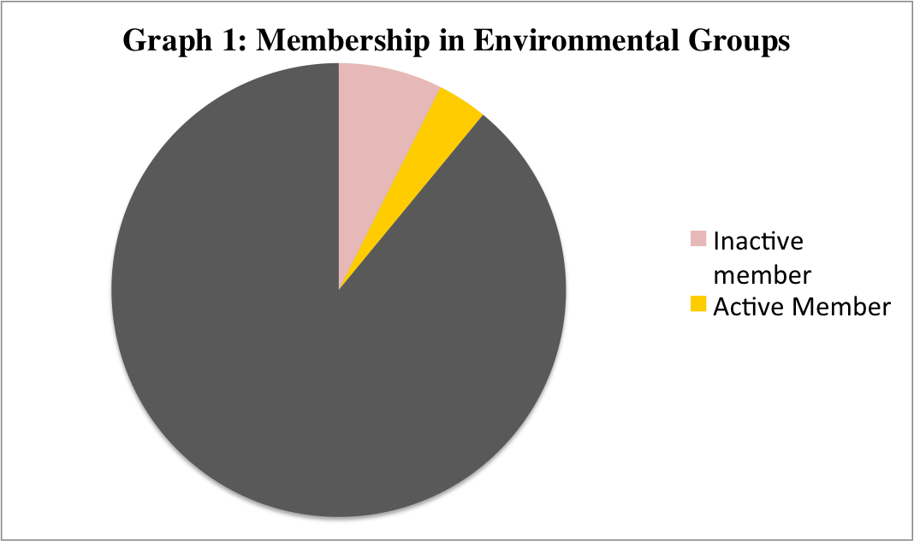

Data Analysis Project --Working title in Progress--

The Data source used for the analysis is from the World Values Survey, hereafter referred to as WVS. The specific dataset is the sixth wave of the survey, which collected data from 2010 to 2014. It is the most recent dataset that we have available.
Data Source: World Value Survey Wave 6
Table 1: Univariate Analysis
|
Country |
GDP |
|
Stockholm |
60,430.22 USD (2013) |
|
Bangladesh |
957.82 USD (2013) |
Data and Documentation
Analysis Section
Pro-environmental behavior is not simply recycling. Active participation or donation to environmental groups is also another important measure to analyze.
When running a quick tabulation on proportion of members currently enrolled with environmental groups globally, we see that the majority are not even members.

Will publish later